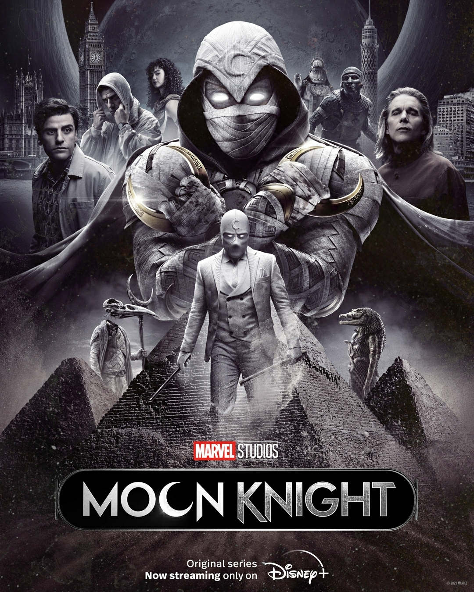

Moon Knight
Moon Knight
“Moon Knight”: ¿Cuál es el futuro de la serie de Marvel Studios?
El miércoles 4 de mayo, “Moon Knight” subió su sexto y último capítulo a Disney Plus. A diferencia de otras series de Marvel Studios, como “Loki” y “WandaVision”, que anunciaron nuevas temporadas o spin-offs casi de inmediato, no se han tenido mayores noticias del Caballero de la Luna.
ALERTA SPOILERS: La siguiente reseña contiene spoilers de "Moon Knight".
Sin embargo, por lo visto en el capítulo final de la serie, aún queda mucho pan por rebanar. La aparición una tercera personalidad de Marc Spector, en la escena poscréditos, es suficiente para pensar que “Moon Knight” no quedará allí. En una reciente entrevista con Deadline, el director de la serie, Mohamed Diab, habló al respecto. En primer lugar, fue tajante al señalar que no sabe si habrá una segunda temporada. A ello, añadió que Marvel Studios tiene una forma muy variada de continuar con las historias de cada uno de sus personajes. “Marvel no opta por una forma convencional, por lo que incluso si les gusta el personaje y quieren extender el mundo, podría ser la temporada 2, podría ser una película independiente, o podría unirse al viaje de otro superhéroe”, explicó el director egipcio que, no obstante, está seguro de que la historia de “Moon Knight” continuará de algún modo.
Los posibles caminos de “Moon Knight”
Como dijimos al inicio, “Moon Knight” termina con la aparición de Jake Lockley, una tercera personalidad de Marc Spector/Steven Grant. Lockley es un chofer de limosina que, tras recoger al villano de la serie Arthur Harrow de un sanatorio, lo mata de un balazo. Teniendo esto en cuenta, es de esperarse que la próxima entrega de “Moon Knight” se centre en este. En esta primera temporada, ya conocimos el origen de Steven Grant, y es posible que en el futuro sepamos más de Lockley y su relación con Spector/Grant y el dios Khonshu, del que es avatar, o sea su representante en la tierra. Hablando de avatares, también tenemos Layla El-Faouly, la ex pareja de Marc Spector, quien se convierte, en el último capítulo de la serie, en el avatar de Taweret, la diosa las mujeres y niños. Así, nace Scarlet Scarab, la primera superheroína egipcia, que se une con Moon Knight en la lucha contra Harrow, avatar de Ammit. Sobre Layla, Diab señaló que quiere que sea un avatar temporal. “Al haberla emparejado con alguien completamente diferente a ella, (como) Tauret, es muy interesante y pueden volverse locas la una a la otra. Debe aprender si necesita ser una superheroína ahora o no, porque odia la idea en este momento, o tal vez necesita aprender si es importante o no. Hay tanto espacio para ir allí, no sé qué va a pasar”.